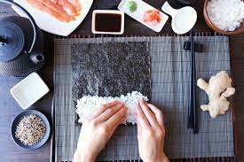

Odin Recipes Home
The Perfect Sushi Rice

Description
Here is a recipe for the perfect sushi rice. You can eat this alone or roll into your favorite sushi
roll with ingredients of choice. I use strips of carrots, cucumbers and slices of avacado. You can adjust
the amount of vinegar in this recipe to suit your taste
Prep: 5 mins
Cook: 20 mins
Total: 25 mins
Servings: 15
Ingredients
- 2 cups uncooked glutinous white rice (sushi rice)
- 3 cups water
- 1/2 cup rice vinegar
- 1 tbs vegetable oil
- 1/4 cup white sugar
- 1 tsp salt
Instructions
Step 1
- Rinse the rice in a strainer or colander until the water runs clear.
- Combine with water in a medium saucepan.
- Bring to a boil, then reduce the heat to low, cover and cook for 20 mins.
- Rice should be tender and water should be absorbed.
- Cool until cool enough to handle
Step 2
- In a small saucepan, combine the rice vinegar, oil, sugar and salt
- Cook over medium heat until the sugar dissolves.
- Cool, then stir into the cooked rice. When you pour this into the rice it will seem wet.
- Keep stirring and the rice will dry as it cools.